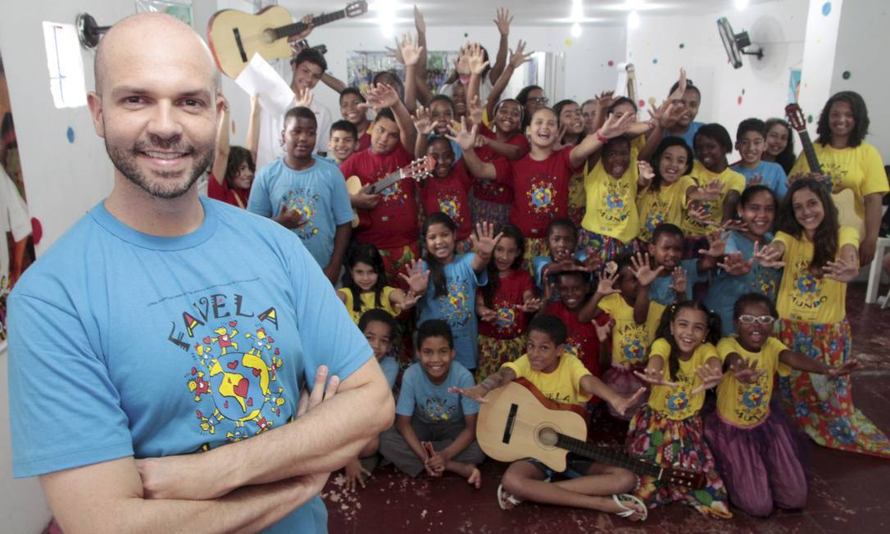

Sobre a ONG

A ONG Coração do Bem trabalha para promover ações sociais e ajudar pessoas em situação de vulnerabilidade. Nosso objetivo é contribuir para uma sociedade mais justa e solidária.
Como podemos ajudar
Desenvolvemos projetos sociais, campanhas de doação e ações de voluntariado para ajudar pessoas que precisam de apoio.
Você também pode fazer parte dessas ações através de uma contribuição ou participando como voluntário.
Entre em contato
E-mail: contato@ongcoraçãodobem.org
 Telefone: (54) 994563-8237
Telefone: (54) 994563-8237
Endereço: Rua Exemplo, 100 - Caxias do Sul - RS